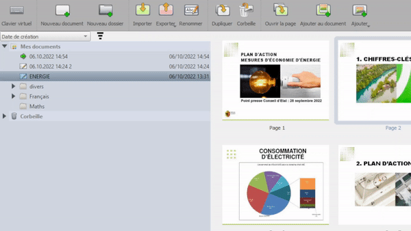
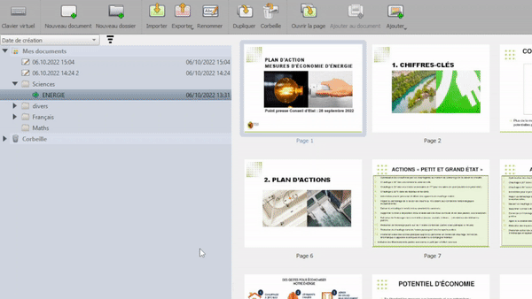

OpenBoard sadrži sustav za upravljanje dokumentima. Jednostavno pritisni 

Stvaranje mape i organiziranje rada
Mapa se može stvoriti pritiskom na ikonu „Nova mapa”. Upiši ime za mapu te povuci i ispusti dokumente u mapu. Tehnika povuci i ispusti se može koristiti i za premještanje cijele mape u jednu drugu mapu.

Bartanje stranicama
OpenBoard dokument može sadržati više stranica. Mogu se duplicirati, premjestiti u smeće ili u jedan drugi dokument. Nove stranice se mogu stvoriti i iz mapa sa slikama, …

 Imaj na umu da se dostupne radnje aktualiziraju prema onome što je odabrano
Imaj na umu da se dostupne radnje aktualiziraju prema onome što je odabrano